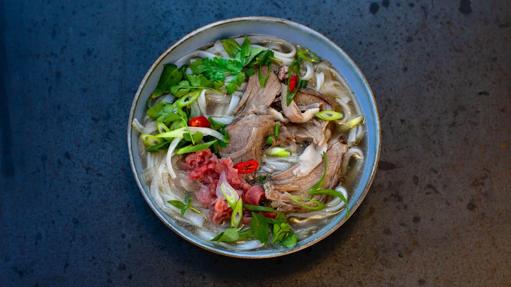

Pho Ga, a memory of the dreaded bao cap era

Description
Created during the struggles, pho ga embodies ingenuity and adaptability in a time where beef is restricted by the government. Instead of using beef bones to make pho, people decided to make do with chicken bones; thus, the primitive version of the dish is born. Since then, hundreds of changes are made until the dish settles to be what is known and enjoyed by generations of Hanoian.
Ingredients
- A full-size chicken (1-1.5 kg)
- DH Food's Pho Ga ingredient pack
- 2 chicken cubes
- 3 Onions
- Salt, fish sauce, and brown sugar
Steps
- Rub salt on the chicken and rinse with water
- Prepare 2 litres of water inside a pot big enough to submerge the entire chicken under the water
- Put the chicken in the cold water
- Turn the oven on, put the ingredient pack inside the pot
- Wait until the water boils, reduce the heat and let simmer for 5 minutes
- Season to taste with the last 3 ingredient listed
- Turn off the oven, let the pot sit for 25 to 30 minutes
- Serve with pho and enjoy!